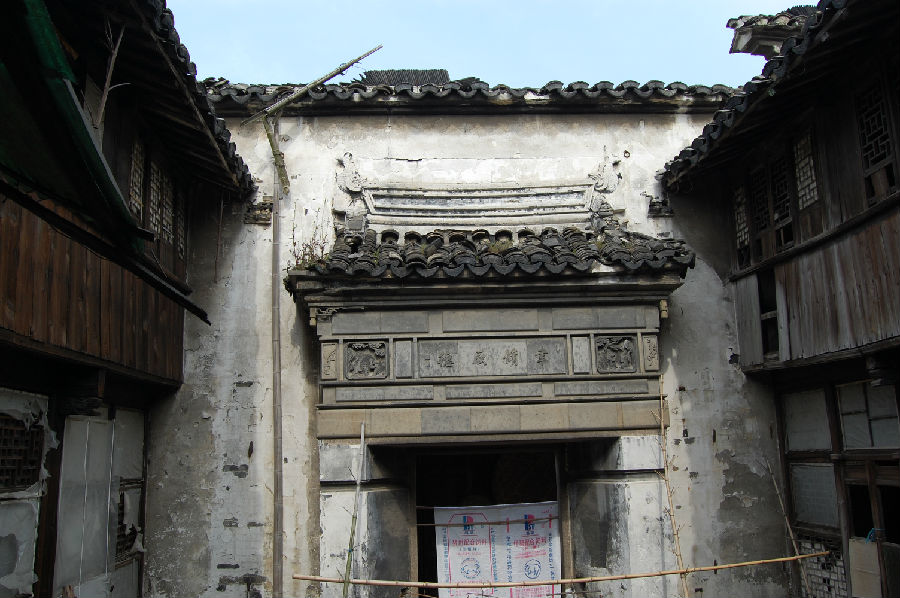

嘉兴市文物保护网 · 市级文物保护点 · 2020-11-09 · 原文

凤桥肖振环老宅位于嘉兴市南湖区凤桥镇南大街56号，据所有人回忆该建筑于民国时建造。老宅沿镇南大街而建，坐西朝东，砖木结构（屋内坍塌，无法进入，具体梁架情况不明），现存二进二层楼（一进为后建），一进为三开间二层楼房，进深6米，与二进间有天井，天井东侧有砖雕门楼，两侧各设厢房一间，最西为二进三开间堂屋，东面中墙南北各立马头墙。该宅梁柱、门窗等处雕工细致精美，做工十分考究，在嘉兴现存传统民居中较少见，具有较高的历史和艺术价值。2009年公布为嘉兴市文物保护点。